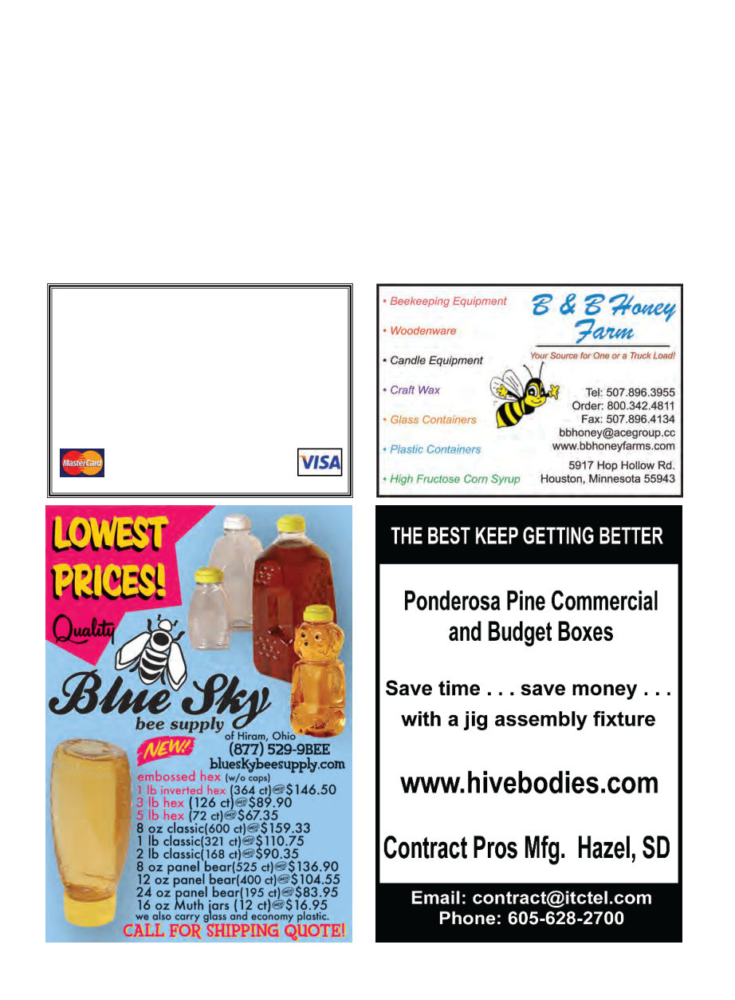

American Bee Journal
886
of “smoke keeps bees calm,” I’d get a ran-
dom question while talking about the next
subject — “but when you’re working a hive
and your hives are close together how do you
prevent the smoke from drifting over and
making the next hive angry?”
There were some funny questions about
the United States as well. In Nigeria, I got
asked, “You don’t have local chiefs? Even in
the villages?” (chiefs aren’t just like mayors
– it’s a hereditary title) And in Ethiopia: “Are
these the same kind of camels you have in
the States? … what do you mean you don’t
have camels?”
Altogether it was a fantastic experience
and I look forward to doing more similar
projects in the future. I would like to thank
the Orange County (California) Beekeepers
Association and David Marder of Bee
Busters for the donated materials they sent
me with, as well as the fine people at Win-
rock who made it possible and the numer-
ous people I emailed with random
questions.
Works Cited:
Ejigu, Kerealem, Gebey, Tilahun and Pre-
ston, T R 2009: Constraints and prospects
for apiculture research and development in
Amhara region, Ethiopia. Livestock Re-
search for Rural Development. Volume 21,
Article #172. Retrieved May 25, 2012, from
http://www.lrrd.org/lrrd21/10/ejig21172.htm
Federal Government of Ethiopia, Procla-
mation No 660/2009: “A Proclamation to
Provide for Apiculture Resources Develop-
ment and Protection” December 24th 2009
Gebremeskel, Daniel, Managing Director
of Comel Honey Processing Facility, per-
sonal communication, June 3rd 2012
Kebede, Adebabay, Ejigu, Kerealem, Ay-
nalem, Tessema, Jenberie, Abebe “Beekeep-
ing in the Amhara Region” Amhara Region
Agricultural Research Institute (2008)
Meixner, Marina, Leta, Messele Abebe,
Koeniger, Nikolaus, Fuchs, Stefan (2011)
“The honey bees of Ethiopia represent a new
subspecies of Apis mellifera—Apis mellifera
simensis n. ssp.”Apidologie
Murutse, Girmay and Tesfay, Yayneshet,
“Honeybee Colonies and Beekeeping Pro-
duction Systems in North Ethiopia” 2012
Lambert Academic Publishing
LOHMAN APIARIES
since 1946
Quality Queens and Packages
Old World Carniolan
for Over-wintering and Honey Production
Dennis Lohman Apiaries
6437 Wagner Road
ARBUCKLE, CALIFORNIA 95912
530-476-2322
Member of California Bee Breeders Association